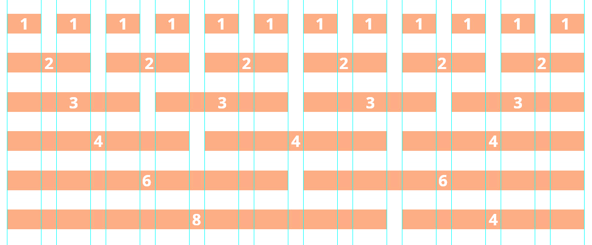

Resnponzibilita - přizpůsobení pro různé displeje
Jak zajistit, aby se stránky zobrazovaly jinak pro malé displeje, např. pro mobily a tablety? Za
tímto účelem se využívají balíčky, které
potřebné chování zajistí. My je jen musíme načíst v <head> a upravit trochu
strukturu stránek.
Viewport
Jedná se o metatag (tzn. obsahuje informace pro stránku), který prohlížeči sděluje informace o rozměrech a měřítkách stránky. Vkládá se do hlavičky stránek.
<meta name="viewport" content="width=device-width, initial-scale=1.0">
Bootstrap
Jedná se o poměrně robustní framework od vývojářů Twitteru, který byl vydán již v roce 2011.
Oficiální dokumentace frameworku je zde.
W3.CSS
Relativně jednodušší na pochopení principů. Využívá obdobný grid systém, který je doplněn o lehčí variantu.
Oficiální dokumentace frameworku je zde.
Bootstrap i W3.CSS využívají tzv. grid systém pro rozmístění elementů na stránce, jen k tomu využívají jinak předdefinované css třídy.
